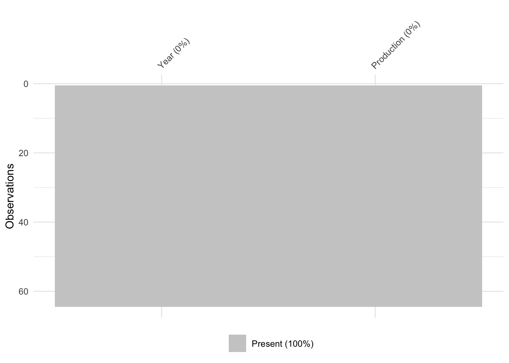

Time Series SARIMA Model
December 2017
1 Data
#CSV Data -Data import from CSV file
data_csv <- read.csv('austria-qu.csv')
# Missing data mapping
vis_miss(data_csv)
#Time Series Data
data_ts<-ts(data_csv[,2],start = c(1975,4),frequency = 4)
# Conversion to tibble
data_tibble<-ts_tibbletime(data_ts)## Loading required namespace: tibbletime#Extend Tibble Data
data_tibble$month <- factor(format(data_tibble$time, "%b"))
data_tibble$year <- factor(format(data_tibble$time, "%Y"))
qOrder=c('Q2','Q1','Q3','Q4')
data_tibble$quarter<-factor(data_tibble$month,labels=qOrder)
pander(data_ts)| Q1 | Q2 | Q3 | Q4 | |
|---|---|---|---|---|
| 1975 | NA | NA | NA | 54.1 |
| 1976 | 59.5 | 56.5 | 63.9 | 57.8 |
| 1977 | 62 | 58.5 | 65 | 59.6 |
| 1978 | 63.6 | 60.4 | 66.3 | 60.6 |
| 1979 | 66.8 | 63.2 | 71 | 66.5 |
| 1980 | 72 | 67.8 | 75.6 | 69.2 |
| 1981 | 74.1 | 70.7 | 77.8 | 72.3 |
| 1982 | 78.1 | 72.4 | 82.6 | 72.9 |
| 1983 | 79.5 | 72.6 | 82.8 | 76 |
| 1984 | 85.1 | 80.5 | 89.1 | 84.8 |
| 1985 | 94.2 | 89.5 | 99.3 | 93.1 |
| 1986 | 103.5 | 96.4 | 107.2 | 101.7 |
| 1987 | 109.5 | 101.3 | 112.6 | 105.5 |
| 1988 | 115.4 | 108 | 129.9 | 112.4 |
| 1989 | 123.6 | 114.9 | 131 | 122.6 |
| 1990 | 131.9 | 120.5 | 130.7 | 115.7 |
| 1991 | 119.7 | 109.7 | 125.1 | NA |
pander(head(data_tibble))| time | value | month | year | quarter |
|---|---|---|---|---|
| 1975-10-01 | 54.1 | Oct | 1975 | Q4 |
| 1976-01-01 | 59.5 | Jan | 1976 | Q1 |
| 1976-04-01 | 56.5 | Apr | 1976 | Q2 |
| 1976-07-01 | 63.9 | Jul | 1976 | Q3 |
| 1976-10-01 | 57.8 | Oct | 1976 | Q4 |
| 1977-01-01 | 62 | Jan | 1977 | Q1 |